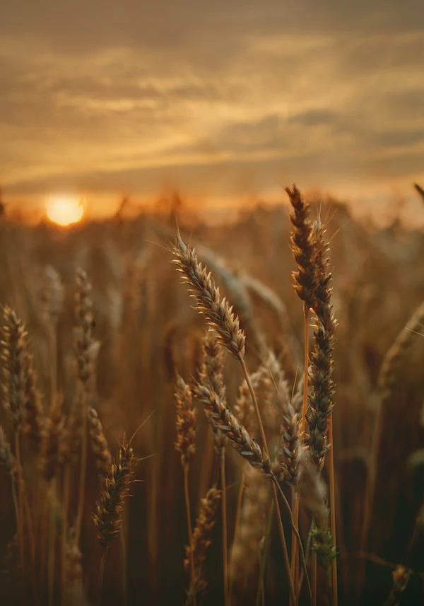
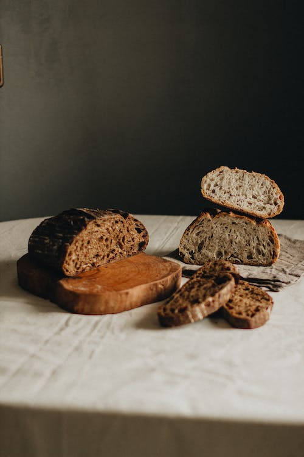
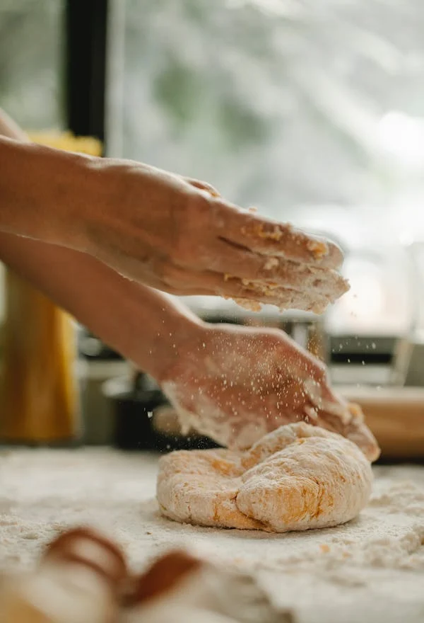

De nombreux archéologues, anthropologues et historiens ont étudié l'origine du pain. Ces dernières années, les équipes de chercheurs de l'universités de Copenhague, de Londres et de Cambridge ont travaillé sur les fouilles de la période du Natoufien effectuées à Shubayqa, un site archéologique du nord-est de la Jordanie découvert au cours des années ’90. Les fouilles ont révélé les traces des communautés de la culture natoufienne, qui ont construit de petits villages servant de camps de base où les habitants revenaient périodiquement. Les restes d'un foyer fournissent la première preuve que le pain a été fait il y a quatorze mille ans, et quatre millénaires avant le début de l'agriculture.

Les résultats, récemment publiés dans Proceedings of the National Academy of Science, montrent qu'au moins 24 des 642 fragments de denrées alimentaires retrouvés sont des miettes de pain. Le pain inventé par les habitants de Shubayqa devait être plat, un peu brûlé, semblable à un pain pita primitif du Moyen-Orient, et très riche en protéines. Nos ancêtres ne connaissaient pas encore les principes du levain, mais leur recette n'était tout de même pas anodine.
Les céréales (graines d'orge et de blé sauvage, ancêtres du blé domestiqué) étaient brisées, décortiquées, écrasées et tamisées. Cette farine était ensuite mélangée à de l'eau pour former une pâte à cuire sur des braises ou des pierres chaudes. Une telle complexité nous fait penser à la nécessité de "concevoir" des aliments plus nutritifs et plus faciles à conserver que ceux de la nature.

On peut donc dire que dans l'histoire de cet aliment est conservée plus qu'une simple recette, le pain est un véritable synonyme d'ingéniosité humaine. Les techniques de transformation du blé ont été un chemin vers l'évolution et la civilisation. A partir des purées primordiales de graines de céréales moulues à la main, pierre par pierre, mélangées à de l'eau et cuites au coin du feu, l'homme a appris à améliorer son produit. Dans ce processus agricole, technologique et gastronomique, un chapitre fondamental a été écrit par les deux grandes civilisations du Croissant fertile, celle des Sumériens, en Mésopotamie, et celle de l'Egypte ancienne.
Le pain comme objet sacré et métaphore de la transformation
Le pain, encore appelé aish aujourd'hui, "vie", en arabe égyptien et le mot ninda, "pain", apparaît sur les tablettes sumériennes depuis la première invention de l'écriture, en 3600 av. J.-C. Son pictogramme est la forme d'un bol rond qui servait à le pétrir. En effet, à l'époque où les Romains se nourrissaient d'une simple bouillie de farine et les Grecs d'une feuille de pâtes cuites au feu de bois, les Egyptiens étaient capables de mettre sur la table des pains gonflés et appétissants.Ils avaient découvert les effets "magiques" de la fermentation, ce qu'on appellera plus tard "le levain naturel". A l'époque, le phénomène était considéré d'origine presque surnaturelle et son observation empirique était plus ou moins aléatoire. Pour obtenir le résultat magique, une pâte à pain "sans levain" (eau, lait, orge et farine de millet) oubliée pendant un certain temps, a commencé à fermenter et, plus tard cuite au four, s'est avérée moelleuse et digeste.

Pour obtenir la transformation, il suffisait d'ajouter à l'amalgame de grains moulus et d'eau, un morceau de pâte qui restait de la veille. C'est pourquoi, dans chaque maison égyptienne, les "pâtes mères" étaient jalousement gardées - comme des créatures sacrées. Grâce à cette petite astuce, les Egyptiens sont devenus des maîtres incontestés dans l'art de la boulangerie, et ont gagné le surnom de mangeurs de pain. Dans le pays des pharaons, la liste des aliments qui ont été apportés dans l'au-delà comprend au moins quinze noms pour indiquer autant de types de pain.Plus tard, les secrets de la pâtisserie furent transmis aux Grecs, qui attribuaient au pain des significations religieuses importantes. Le métier de boulanger jouissait d'un grand prestige, héritier de l'alchimiste, du forgeron, de sa maîtrise du métal et de tout ce qui venait des profondeurs de la terre. Il était le gardien du feu, celui qui a vraiment donné au pain sa forme définitive, son identité. Chaque ville avait un four public, l'espace organisé autour de la cuisson de la pâte, utilisé pour l'expérimentation. Les ménagères grecques malaxaient leur pain et le prenaient pour le faire cuire chez le boulanger, sous la protection spirituelle de la déesse Déméter "Terre Mère" et "déesse du pain", du blé et "l'agriculture, créatrice du cycle des saisons, la vie et la mort.
L'idée du pain était en effet étroitement liée à la fécondité de la terre. Le grain de blé était inscrit au cœur des mystères d'Éleusis, une ville à l'ouest d'Athènes, où les pèlerins venaient de tout le territoire de la Méditerranée. Au centre des rites agricoles célébrés dans le sanctuaire de Déméter, il y avait la mort symbolique de la graine de blé qui, une fois enterrée dans les profondeurs de la terre, germait pour donner un nouvel épi.